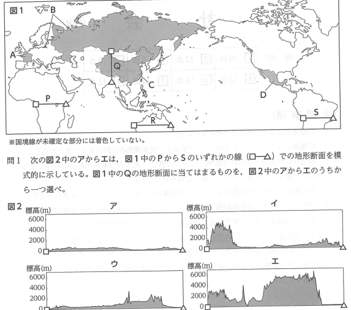
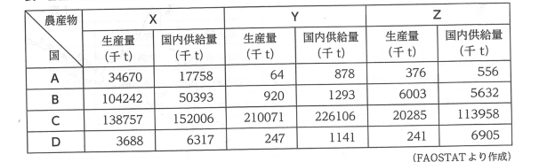
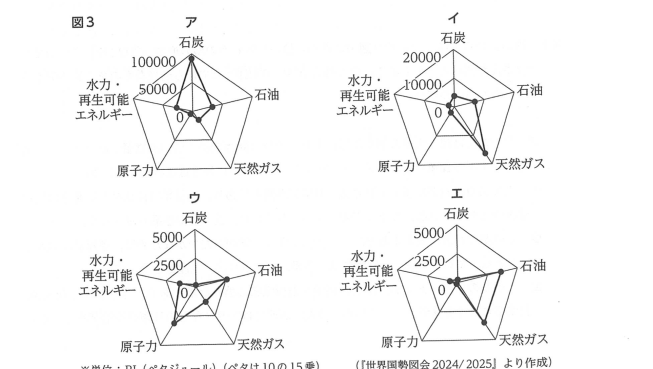

📚 高校入試 社会 暗記学習アプリ（□1・完全版）
地理（世界・地形）
問1：図1中のQ（チベット高原・ヒマラヤ山脈付近）の地形断面に最も当てはまるものはどれか[cite: 1, 2]。

※図1および図2（ア〜エの地形断面図）[cite: 6]
地理（国際的枠組み）
問2：ユーロトンネル（海底トンネル）で結ばれ、シェンゲン協定によりパスポートなしで国境を通過できる地域統合に加盟している、図1の「A」の国はどれか。
地理（世界の農産物）
問3：表中の農産物のうち、フランスやロシアなどで生産量が多い「X」と、中国だけで莫大な生産量がある「Y」の正しい組み合わせはどれか。

※各国の農産物の生産量と国内供給量に関する表[cite: 1, 2]
地理（世界のエネルギー）
問4：図1の「B」の国（ロシア）における一次エネルギー供給構成（2023年）として最も適切なレーダーチャートはどれか。

※図3 一次エネルギー供給の構成（ア〜エ）[cite: 1, 2]